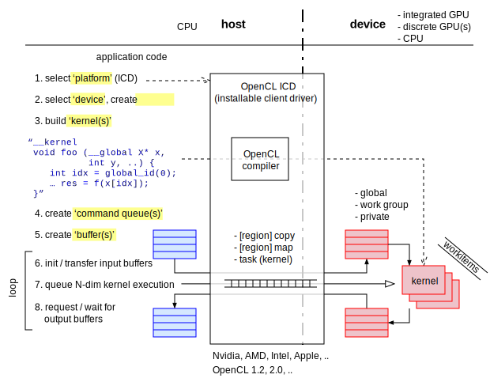
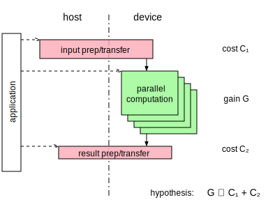
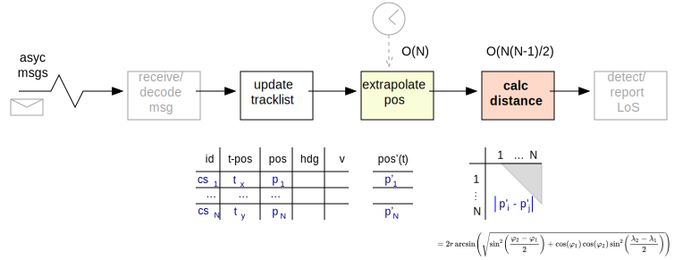

Heterogeneous Computing in RACE
The general theme of RACE is parallel computation. This is most obvious in the choice of using actors as the basic programming paradigm, which in a task-parallel execution environment (simultaneous multi-threading or multi-core) translates into parallel computation of actors that can work independently.
Remote Actors or application frameworks such as SHARE extend this towards distributed applications executing in parallel on multiple network nodes.
Contemporary computer systems provide more parallel execution capabilities at the hardware level. The primary example are modern GPUs that typically feature a number of parallel compute units that is two orders of magnitudes larger than even high end CPUs. Even just looking at today's CPU architectures we see support for data parallel (SIMD) processing that is normally under-utilized.
The main idea behind the race-cl module is to extend the range of support for parallel computation in RACE all the
way from the macro-cosmos of distributed, networked applications and the cosmos of multi-threading with actors down
into the micro-cosmos of specialized parallel hardware such as GPUs and SIMD instruction sets.

The challenge is to support such specialized hardware in a programming environment that is as much geared towards cross- platform compatibility as a Java Virtual Machine (JVM). Making use of specialized hardware and instruction sets requires more control over machine code generation than what such managed-code environments normally provide. In general, utilizing specialized hardware is optimization, which should only be performed if required and if an application is sufficiently stable since it makes it much harder to maintain and evolve the system.
OpenCL
As a middle ground between using hardware agnostic (JVM) code and vendor- and model- specific native code RACE utilizes OpenCL - a standardized, cross-vendor API for heterogeneous computing managed by the Khronos Group (a vendor consortium).
In a nutshell, OpenCL uses kernels - short pieces of mostly linear, C-like code operating on N-dimensional data sets - that are runtime compiled and transferred from the host CPU to selected computing devices (such as GPUs).

These kernels are then executed in parallel on the selected device, depending on the dimensionality of the data set. In addition, kernel code supports built-in vector types that can facilitate fine-grained SIMD processing.
What makes OpenCL especially attractive is that it abstracts over a wide range of devices and vendors - from discrete GPUs to integrated GPUs all the way to even CPUs. Although the latter seems counter-intuitive it can result in significant acceleration by means of kernel code making use of specialized instruction sets (such as AVX) that are normally not utilized by cross-platform JVMs.
However, all this comes at the cost of having to re-factor the data model and having to transfer the data at runtime to the device by means of OpenCL buffers in order to make it accessible to the kernel code. Depending on the selected device this might involve transferring data to completely different memory systems. Moreover, the higher the potential gains from the device are (e.g. discrete GPUs) the more likely it depends on a memory system that is not directly accessible by the host/CPU.
In addition - and unlike accelerated graphics - heterogeneous computation requires round-trips. Once the computation on the device has finished the host (CPU) needs to be notified and then needs to transfer the result data back from the device memory.
On the other hand, the asynchronous nature of device/kernel code execution makes the OpenCL programming model especially suitable for embedding it into a highly concurrent environment such as RACE - device computations can be encapsulated in dedicated actors, not affecting the rest of the system.
It should also be noted that the use of OpenCL results in a polyglot system (using several implementation languages). Due to the simple nature of kernel code (C-99 dialect) this seems acceptable.
Cost/Benefit Relation
Based on the OpenCL programming model described above the central question whether a heterogeneous computing solution if suitable for a given problem comes down to a simple relation: do the potential gains from parallel (device) execution outweigh the additional cost of data transfer to/from the device?

Unfortunately, the answer is not that simple. It highly depends on both the problem domain and the targeted device:
- how easily can the host data model be translated into a simple N-dimensional device data model?
- what are the actual transfer costs for the chosen memory/buffer types?
The answer to the second question usually requires experiments that involve micro benchmarks (hard to measure), which can yield un-expected results (e.g. an internal GPU being more suitable due to direct memory access).
The first question can be of even higher relevance since the host data model normally has more complexity (e.g. using reference values) than what can/should be mapped to the device. As a result - and to minimize transfer costs - it might require to split the data models and to transfer the device data incrementally (i.e. keep it on the device). This however will require additional synchronization efforts in order to make sure the overall model stays consistent (e.g. to make sure results from the device are consistent with the current host data).
Motivating Example
Despite the cost of hardware optimization there is a strong use case for systems that have to track a large number of (mostly) independent objects such as flights, and evaluate properties that involve pairwise computation for such objects. This is a quadratic problem that can - depending on computational cost of properties - quickly overwhelm scalability.
A motivating example is realtime detection of loss-of-separation (LOS) for a large number of flights (>100) that are each updated with irregular time series (i.e. not synchronously). A typical input source would be local ADS-B receivers with update rates ~1Hz.

Each new position update of a flight triggers a chain of computations that can be done in parallel. First, all other flight positions have to be extrapolated to the time point of the new update. This operation can be done independently for each flight and hence is O(n), but it requires to store and evaluate per-object state (last m positions, intentions). Computational cost for this step can vary vastly, based on how the estimation is done and what precision is required.
Once all flight positions for the update time point have been estimated the system has to do a pair-wise distance calculation for theses positions. Again, each of these computations is independent of other pairs, which gives us O(n(n-1)/2) complexity. To represent the computational cost of each step, the example diagram uses the haversine formula for distance calculation (which is not warranted in most realistic cases esp. given the uncertainty of estimated positions).
It seems obvious that both position estimation and distance calculation can be performed significantly faster on parallel hardware, but the number of parallel operations will easily exceed the level of task parallel execution that can be achieved with off-the-shelf CPUs (either through SMT or independent cores).
Current State of RACE-CL
At this point race-cl is merely an abstraction layer that adds resource management for OpenCL platforms, devices,
context, programs, command queues, buffers, events and kernels on top of the LWJGL library, which in turn is a
wrapper for the native OpenCL drivers.
Eventually, CLActor will encapsulate kernel execution and handle the data transfer to/from OpenCL devices.
Apple deprecated OpenCL support with the release of macOS 10.14 in 2018 in favor of its proprietary Metal API. As of 2021 Apple still distributes OpenCL v1.2 with macOS but the tool chain has not seen substantial updates and has reliability problems at least on macOS 10.15.7. This puts OpenCLs role as a cross-vendor API for heterogeneous computing in question, especially given that there is a overlap with Vulkan compute kernels. RACE might shift to Vulkan in the future.